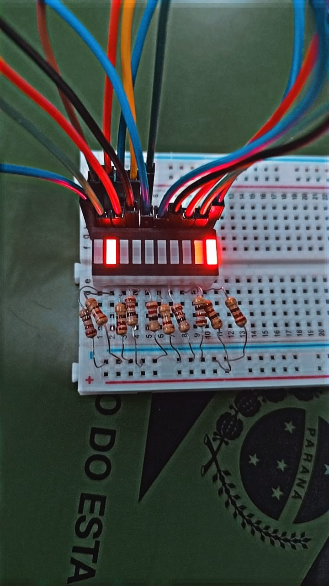
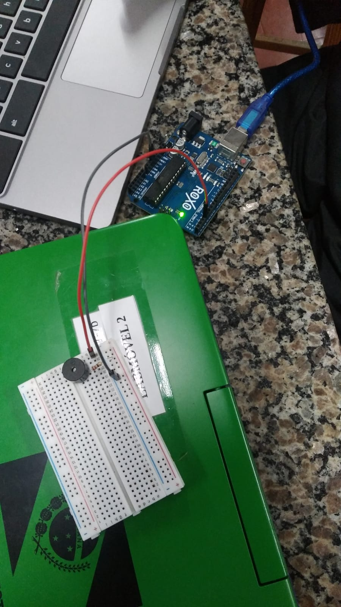
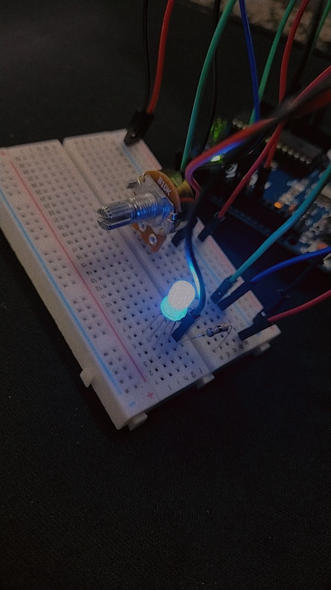

Nós somos um grupo no qual almejamos conseguir criar um site em Html/Css utilizando o curso da Alura como ideia.
O nosso grupo é composto por estudantes do ensimo médio cursando o 2 ano dele, Ao todos somos 4 membros, Bruna, Mariana, Elyziee e Miguel.
Aqui nós temos uma foto de um semáforo usando leds, nós usamos uma placa de arduino para entendermos os componentes mais comuns que se tem.
Ao contrário do semáforo a Super máquina foi um projeto que nos requeriu m conhecimento mais abrangente para fazermos ela.
Embora seja apenas uma foto, este buzzer conseguia tocar a música tema do Super Mario, foi um projeto para descontrairmos.
Aqui nós estavamos fazendo um Led RGB varirar entre as suas cores usando um potênciometro como intermediário.